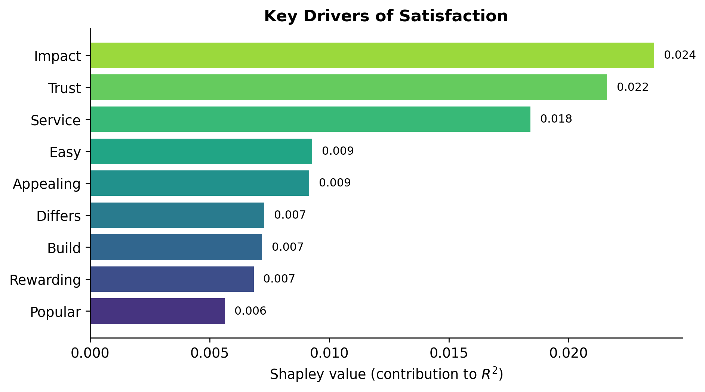
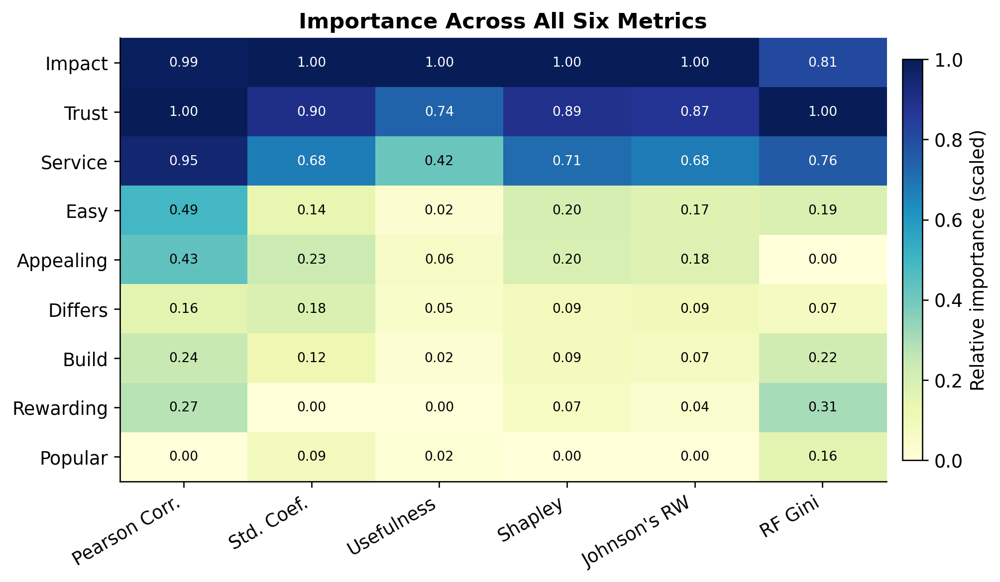
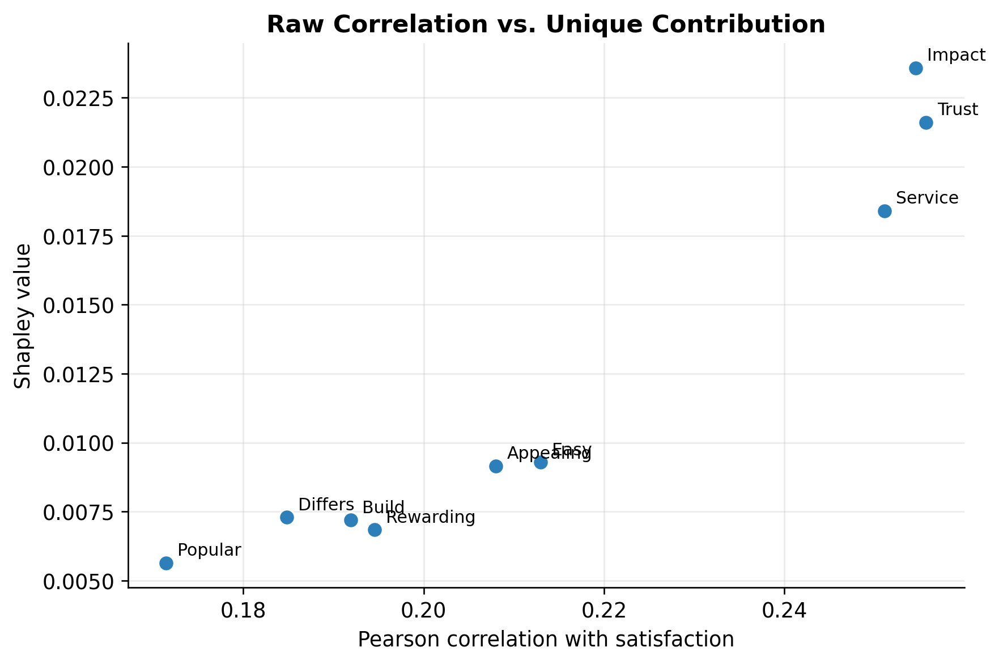
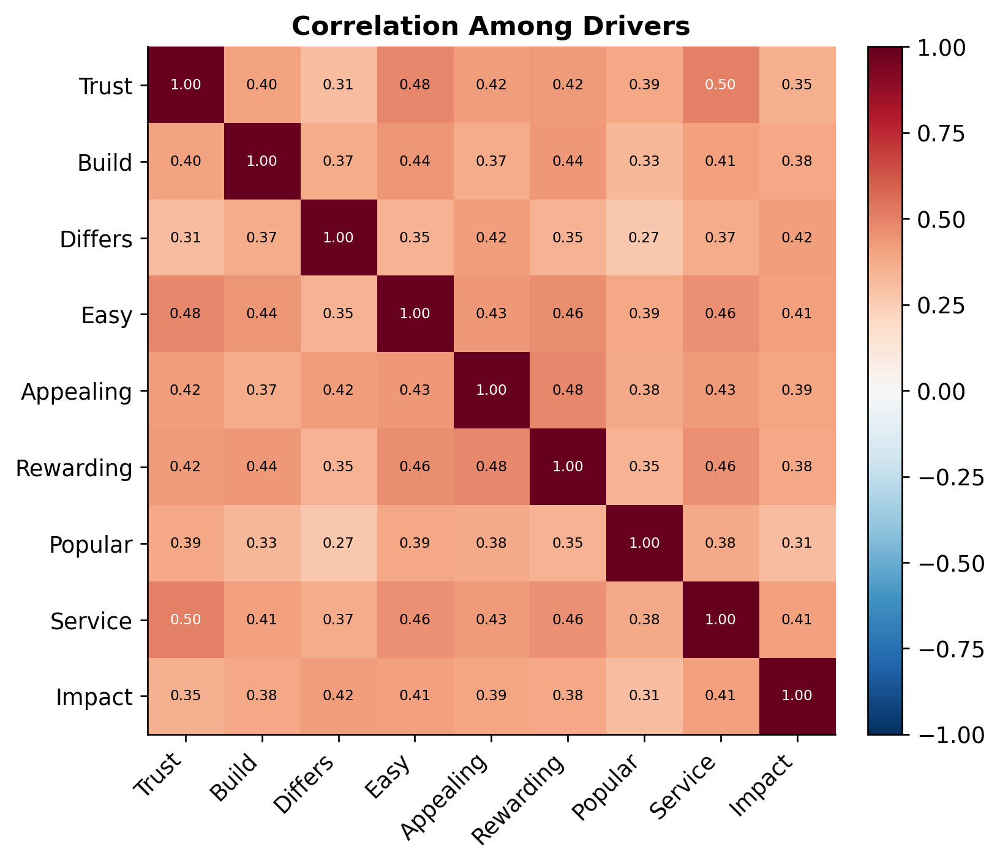
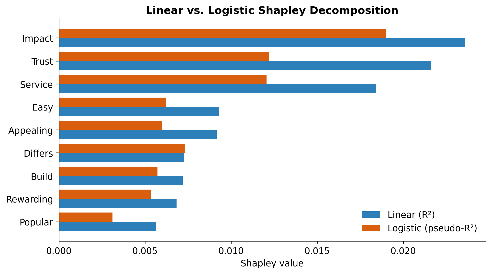

| Pearson Corr. | Std. Coef. | Usefulness | Shapley | Johnson's RW | RF Gini | |
|---|---|---|---|---|---|---|
| trust | 0.256 | 0.116 | 0.008 | 0.022 | 0.022 | 0.152 |
| build | 0.192 | 0.020 | 0.000 | 0.007 | 0.007 | 0.100 |
| differs | 0.185 | 0.028 | 0.001 | 0.007 | 0.008 | 0.090 |
| easy | 0.213 | 0.022 | 0.000 | 0.009 | 0.009 | 0.097 |
| appealing | 0.208 | 0.034 | 0.001 | 0.009 | 0.009 | 0.085 |
| rewarding | 0.195 | 0.005 | 0.000 | 0.007 | 0.007 | 0.105 |
| popular | 0.171 | 0.017 | 0.000 | 0.006 | 0.006 | 0.095 |
| service | 0.251 | 0.088 | 0.005 | 0.018 | 0.018 | 0.136 |
| impact | 0.255 | 0.128 | 0.011 | 0.024 | 0.024 | 0.140 |
Key Drivers Analysis
Overview
This post replicates the variable-importance table from slide 75 of the Key Drivers slides. Using customer-satisfaction survey data, I measure how much each of nine perception attributes drives overall satisfaction, using six different importance metrics:
- Pearson correlations — simple bivariate association with the outcome.
- Standardized regression coefficients — partial effect, controlling for other drivers.
- Usefulness (drop-one) — the drop in \(R^2\) when a variable is removed from the full model.
- Shapley values — average marginal \(R^2\) contribution across all variable orderings (own implementation).
- Johnson’s relative weights — an approximation that partitions \(R^2\) among correlated predictors.
- Mean decrease in Gini (Random Forest) — impurity-based importance from a random forest.
The polychoric correlations are omitted, as permitted by the assignment.
Results
The Shapley values and Johnson’s relative weights each sum to the full-model \(R^2\) of np.float64(0.109), confirming both decompositions are correct.
Visualizing the Drivers
Which attributes matter most?

Trust, impact, and service stand out as the strongest unique drivers.
Do the six metrics agree?

Trust, impact, and service stay dark (high) across every method, while popular, build, and rewarding stay light (low). The methods broadly agree.
Bivariate vs. partial importance

Drivers in the upper-right (trust, impact, service) are both strongly correlated and uniquely important.
How the drivers relate to one another

The drivers are positively but moderately correlated, which is why the partition methods spread importance more evenly than raw correlations alone would.
Bonus: Shapley Values for a Logistic Model
The metrics above all treat satisfaction as continuous. As an extra step, I extend the Shapley decomposition to a logistic regression, which models a binary outcome — here, whether a customer is highly satisfied (a rating of 4 or 5) versus not. About 51% of customers fall in the highly-satisfied group, so the split is fairly balanced.
Because a logit has no ordinary \(R^2\), the fit metric becomes McFadden’s pseudo-\(R^2\), \(1 - \ell_{\text{model}} / \ell_{\text{null}}\), where \(\ell\) is the model log-likelihood. The Shapley logic is identical: each driver’s value is its average marginal gain in pseudo-\(R^2\) across all \(2^9\) subsets of drivers.
Sum of logit Shapley values: 0.0770
Full model pseudo-R^2: 0.0770The values again sum to the full-model pseudo-\(R^2\), confirming the decomposition. The chart compares each driver’s linear Shapley value against its logistic-model counterpart.

The two models produce the same top tier — impact, trust, and service — so the conclusion is robust to whether satisfaction is treated as continuous or as a high/low binary outcome. The pseudo-\(R^2\) magnitudes are naturally smaller, since a logit explains a coarser, binary target.
Discussion
The metrics tell a consistent story. Trust, impact, and service rank at the top across essentially every method.
- Bivariate vs. partial importance. All nine drivers have similar raw Pearson correlations (~0.17–0.26), but the partial metrics spread them out more because the drivers are correlated with one another.
- Shapley and Johnson agree closely. Both decompose \(R^2\) and produce nearly identical rankings.
- Usefulness understates correlated drivers. Drop-one values are small because removing one correlated predictor barely hurts the model.
- Random forest spreads importance more evenly but still places
trust,impact, andserviceat the top. - The ranking survives a change of model. Decomposing a logistic model on a binary high/low-satisfaction outcome yields the same leading drivers, so the result is not an artifact of treating satisfaction as continuous.
For management, the takeaway is to prioritize the attributes that drive satisfaction most strongly and uniquely — trust, impact, and service.